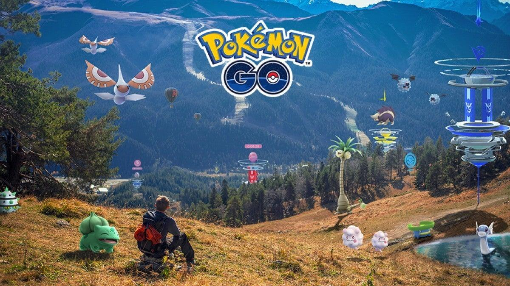
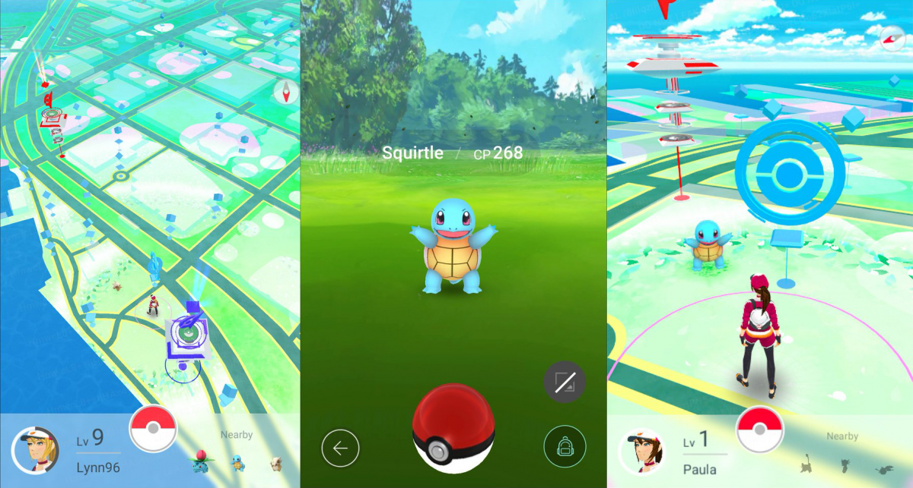
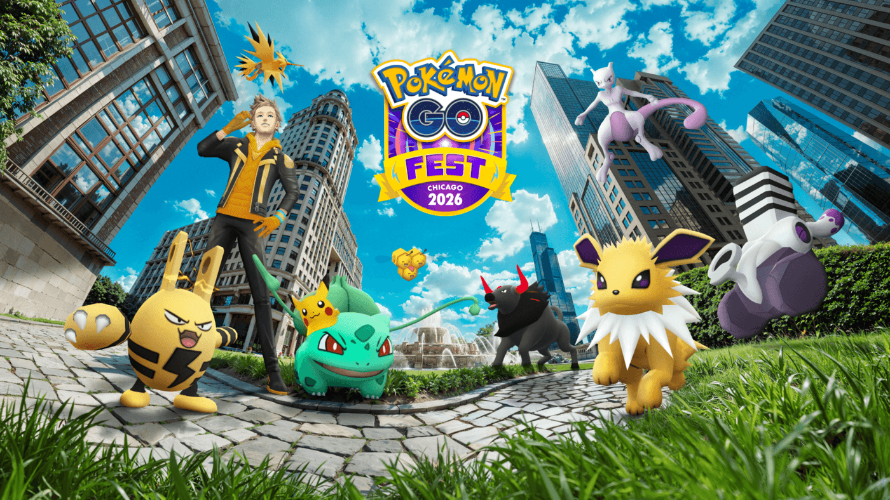

RPG / Realtà Aumentata / Geolocalizzazione


Pokémon GO unisce la realtà aumentata alla geolocalizzazione, costringendo i giocatori a mantenere l'attenzione alta mentre si spostano fisicamente all'aria aperta. Il gioco mappa le strade della tua città tramite il GPS dello smartphone, ponendo come obiettivo la cattura dei Pokémon selvatici, la rotazione dei Pokéstop per fare scorta di oggetti e la conquista delle Palestre sparse sul territorio per conto del proprio team.
Il problema principale è la forte dipendenza dalla posizione geografica del player. Chi vive in provincia o in piccole realtà rurali si ritroverà con una mappa deserta, priva di spawn rilevanti o di punti di interesse, il che costringe a spostarsi verso i grandi centri urbani per divertirsi sul serio. Inoltre, nonostante l'abilità nel calibrare i "lanci eccellenti", le percentuali di cattura dei mostriciattoli leggendari al termine dei raid rimangono bassissime.
Il fulcro dell'aspetto comunitario è rappresentato dai Raid Cooperativi. Questa funzione permette a un massimo di 20 giocatori di fare squadra per abbattere un boss gigante ed estremamente potente entro un tempo limite. I raid sono divisi per livelli di difficoltà e costringono a studiare i counter elementali migliori per massimizzare i danni. Una volta sconfitto il bersaglio, si riceve un quantitativo limitato di Premier Ball per provare a catturarlo; una dinamica che incentiva l'aggregazione locale, anche se i costi sui biglietti da remoto lo hanno reso sempre più vicino al "pay to play".
